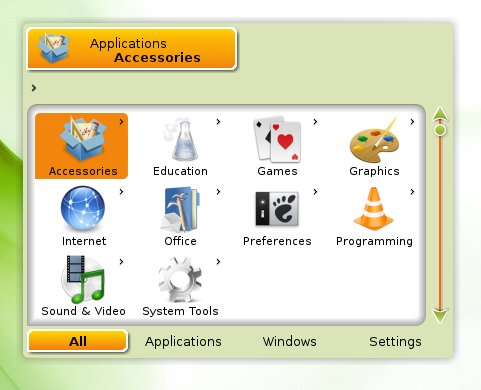
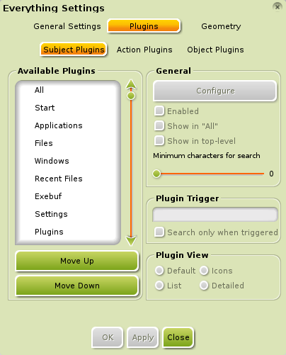
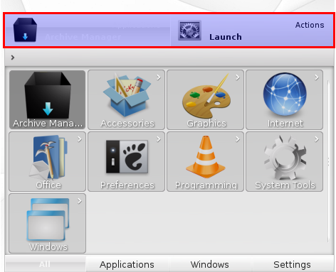
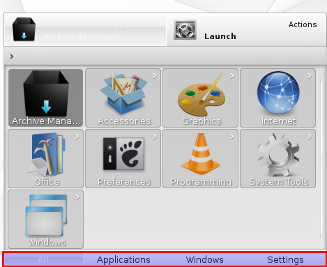

[click on any image to enlarge]
When the Enlightenment (E17) developers hatched this Module, they tried to find a name to describe what it does. All they could think of was Everything.In a very small nutshell, Everything is a fully-indexed database of all the applications and files on your PC.
{kind=link}
Other operating systems have similar features. Windows has "Desktop Search". Mac OS X has "Spotlight". If you have been following Linux you are likely familiar with "Gnome-Do". What sets Everything apart is its plugin architecture that allows it to go beyond simply finding applications and files.
How to Run Everything
Everything is quite sophisticated. Not only because of all it can do, but how easily you can do it. The default E17 method of opening Everything is to press Alt+Esc. Then simply start typing what you want to do. As you type, Everything will start showing suggestions of what it thinks you want to do. When you see what you want, you can select it and press Enter or double-click it. If you change your mind and want to exit Everything, simply press Esc or click somewhere outside the Everything window.
By default, Bodhi Linux provides Win+Space and Alt+Esc as shortcuts to Everything, but you can also access it at Main Menu>Run Everything.
Everything also adapts to your computing habits.
Every time you use Everything it keeps track of what
you do most frequently. Over time your more commonly used files,
applications, etc. appear with fewer keystrokes. For example, when you
first use Everything and simply enter the letter
M , you will see several applications in some order such
as Menu Settings, Midori,
Mixer, and so on. Now suppose you kept going and
typed Midori , and launched it. After doing this a few
times, you will only have to type M and
Midori will show first.
Everything Does Anything
Suppose you have a custom bash script called myscript,
and you want to edit it. You fire up Everything and
type myscript . Now when you select it, how is
Everything supposed to know whether you want to edit
it or run it?
If you look at the top of the Everything window, you will see two tabs. The first one is the default view that lists the possible matches to your query. The second one is contextual and can change depending on what is selected. It typically shows the various Actions you can perform with the selected item.
Back to our myscript example, if you click on the
second tab, you will see a list of possible things you can do with your
script such as Open with... or Copy to...
It might also list a text editor like Leafpad and an option to
Run in Terminal. Choose Leafpad and your script will
open for editing.
The icing on the cake is that just as Everything
keeps track of what you select most frequently, it also remembers what
you do with them most frequently. So next time, you type
myscript into Everything the first
Action it chooses will likely be to open it in
Leafpad.
Plugins
As mentioned before, one of Everything's most powerful features is its plugin architecture. Everything you see in Everything is the result of some plugin. The more commonly used and understood ones are Applications, Files, and Recent Files. If you open Everything Settings at Main Menu>Settings>All>Launcher>Everything Configuration, and choose the Plugins tab, you will see that there are three types of plugins: Subject, Action, and Object.
{kind=link}
These are organized by the tabs you see at the top of the Everything window. The first tab shows the results from the applicable Subject plugins. The second tab shows any applicable Action plugins, things you can do with the selected Subject. If needed, there will be a third tab that shows the applicable Object plugins, what to perform the selected Action on. (For example, if you select the Copy To... Action, it needs to know where to copy to.) The smaller text in the upper right corner of each tab shows what plugin is generating the current result.
{kind=link}
Along the bottom of the Everything window you can see more tabs showing the available plugins for each type: Subject, Action, or Object. They are also contextual based on what is currently selected. By default, every option from every plugin is shown. The tabs listed at the bottom allow you to filter the choices by plugin.
{kind=link}
Default Plugins
Plugin |
Description |
| Applications | As mentioned before, one of the most commonly used and understood plugins is the Applications plugin. This plugin is what allows Everything to launch an application. |
| Files/Recent Files | Commonly used plugins that let Everything find files and browse the directories on your filesystem. |
| Windows | Plugin which allows you to manipulate open windows. |
| Settings | Plugin to find various Setting dialogs for E17. |
| Exebuf | Plugin to run CLI commands. |
| Text | Simple plugin to copy snippets of text to the clipboard. |
| Plugins | A plugin to access plugins! |
Plugin |
Description |
| Applications | As mentioned before, one of the most commonly used and understood plugins is the Applications plugin. This plugin is what allows Everything to launch an application. |
| Files & Recent Files | Commonly used plugins that let Everything find files and browse the directories on your filesystem. |
| Windows | Plugin which allows you to manipulate open windows. |
| Exebuf | Plugin to run CLI commands. |
| Settings | Plugin to find various Setting dialogs for E17. |
| Plugins | A plugin to access plugins! |
| Calculator | Simple plugin to perform the basic functions of a calculator (trigger =). |
| Text | Simple plugin to copy snippets of text to the clipboard. |
Beyond Everything
The above plugins are the standard ones that come with Everything. You can install additional plugins to enhance the functionality of Everything. Below is an example:
Search the Web
The websearch plugin is actually a collection
of plugins that allow you to quickly search the internet. It is currently still being developed.
Do you use Youtube or Wikipedia?
Search through their databases directly from Everything.
First, you have to install the websearch
Module, though. To install
the websearch plugin, search for
everything-websearch in Synaptic
(Main Menu>Applications>Preferences),
or run the following in a terminal, such
as Terminology:
sudo apt-get install -y everything-websearch
After you install the websearch Module, you need to load it into memory before use.
Need to quickly bring up the YouTube video of 'Keyboard Cat'?
No problem. Open Everything and enter:
y keyboard cat
The results, with thumbnails, will come flooding in.
Navigate to the one you want,
and press Enter.
You can similarly do Wikipedia searches using the trigger
w.
Keyboard Navigation
While you can use your mouse to navigate through Everything, it was designed with the keyboard jockey in mind. Here are the basics.
Keys |
Action |
| Tab | Cycle through top tabs (Subject, Action, Object) |
| up/down/left/right | Move through possible choices |
| Enter | Select item/action |
| Ctrl+left/right | Move through bottom tabs (plugin filters) |
Keys |
Action |
| Tab | Cycle through top tabs (Subject, Action, Object) |
| up/down/left/right | Move through possible choices |
| Enter | Select item/action |
| Ctrl+left/right | Move through bottom tabs (plugin filters) |
If reaching for the arrow keys is appalling to you, there are two options, Vi based (default) and Emacs based, which can be set in Everything Settings for faster navigation.
Vi |
Emacs |
Action |
| Alt+h | Alt+b | Move left |
| Alt+j | Alt+n | Move down |
| Alt+k | Alt+p | Move up |
| Alt+l | Alt+f | Move right |
| Alt+i | Alt+i | Cycle through top tabs (Subject, Action, Object) |
| Alt+Shift+n | Alt+Shift+f | Next plugin filter |
| Alt+Shift+p | Alt+Shift+b | Previous plugin filter |
Vi |
Emacs |
Action |
| Alt+h | Alt+b | Move left |
| Alt+j | Alt+n | Move down |
| Alt+k | Alt+p | Move up |
| Alt+l | Alt+f | Move right |
| Alt+i | Alt+i | Cycle through top tabs (Subject, Action, Object) |
| Alt+Shift+n | Alt+Shift+f | Next plugin filter |
| Alt+Shift+p | Alt+Shift+b | Previous plugin filter |